약 5주간 머물다가신 엄마님과 함께 씐나는 런던투워
깜장옷그만사/ 다있는데왜안써 / 화장좀하지
삼단콤보구박을 매일같이 들으면서
그래도 꿋꿋하게 깜장옷을 입고 댕겼다^^;;;;
찍어주는 사람(엄마님)이 있응께 좋군욤 희희
작년에는 정말 너무한다 싶을정도로 비만 내렸는데
올해는 여름날씨의 연속
어메 더워라;; 선풍기도 사왔음;;;;
저날 레깅스에 가디건까지 입고 외출했다가
막판에 화장실가서 레깅스벗구 가디건도 벗어버렸다능;;
원피스랑 가디건 둘다 COS
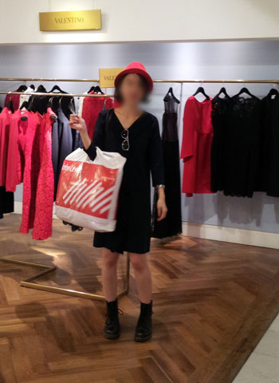
셀프리지서 맘에드는 모자발견 +_+
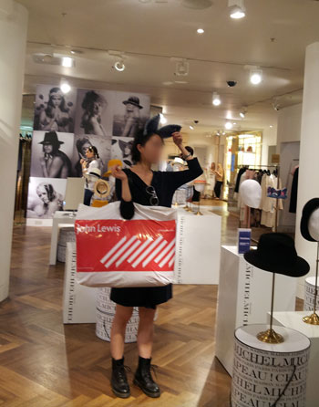
퇴끼머리띠!!
나이드니까(.......) 이런 귀여운게 좋아ㅜㅜ
저 데님으로 만든 퇴끼머리띠가 470파운드;;;;; 어메;;;;
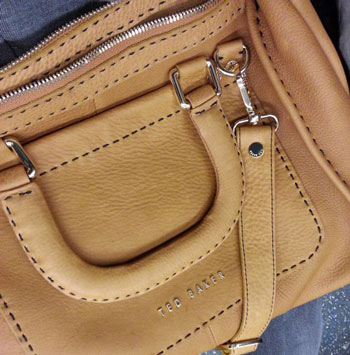
이번에 구입한 TED BAKER 가방
House of Fraser에서 세일하는거 놓치고
셀프리지서 제값 다주고 샀는데 ㅡㅡ;;;
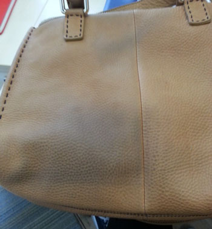
구입한지 삼일만에 이런상황이 ㅡㅡ;;;
청바지나 옷색이 묻어서 가죽이염된거라는데
아니 그래도 그렇지 하루 출퇴근할때 사용하고
두번째날 외출할때 잠깐들고 이건 좀 심하잖아 ㅡㅡ;;;
그래서 회사근처 테드베이커 매장에가서 교환이나 환불되냐고 물어봤더니
이건 가방잘못이 아니고 니잘못이라서 둘다 못해준단다 ㅡㅡ;;;
가죽전문가게에 가서 클리닝하고 방지스프레이(?)같은걸 뿌리면
괜찮다는 설명해줌
나: ........그말은 즉 지금 가방새로사서, 또다시 내돈과 내시간을 들여서
크리닝샵에 가서 처리를 하란소리네요?
매니저: ............어쨌든 그건 가방잘못이 아니라서 우리가 해줄수 있는건 없어요
나: ............그럼 가방에 안내문구라도 좀 써붙이지 그랬어요.
이 가죽은 매우 오염되기 쉽고 섬세하니 옷입을때 골라입어라던가 조심하라던가 뭐 이런걸
매니저: ........크리닝샵가서 한번 처리하면 다시는 이런일 없어요
나: .......그말인즉 가게 직영 크리닝샵도 없구(먼저 물어봤는데 없다고 했음;;)
새로산가방에 내가 또다시 돈과시간을 들여서 크리닝샵을 찾으라는 소리죠?
아니 이렇게 쉽게 오염되는 가방이면 애초에 구입도 안했어요
매니저: ............어쨌든 그건 가방잘못이 아니라서 우리가 해줄수 있는건 없어요
ㅡㅡ;;;;; 씨바 내가 녹음기랑 대화하나;;;;
그럼 크리닝샵 어디로 가야되냐고 알려달라니까
구글에서 검색해서 프린트해 뽑아주더라;;;;;;;
테드베이커 실망이야 ㅡㅡ;;;
아니 가격이 싼것도 아니고
내가 왜 가방때문에 옷을 가려입어야해ㅡㅡ;;;
툴툴거리고 가죽크리닝샵 찾고있는데
엄마님께서 혼자 밑져야 본전인 생각으로 셀프리지가서
다시한번 이야기해봤는데
셀프리지는 교환해줌 ㅡㅡ;; 이 뭥미;;;;;;
.....여기서 5년산 나보다 김여사님이 훨 났다 OTL;;;;
(언성한번 안높이구 우아하게 i am not happy / change / or refund / not good
요 단어로 해결봤다는걸 꼭 강조해 달라고 당부하셨음 ㅋㅋㅋㅋㅋ)
초반에 내가 매장찾아갔을때와 똑같은 레파토리가 펼쳐졌었는데
(니잘못이니 크리닝샵 가라는 ㅡㅡ;;;;) 엄마님이 매우 강경하게
이건 아니다 환불이나 검은색으로 교환해달라고 계속주장하자
해주겠다고 하면서 점원들이 급 분위기 전환을 위해
어디서왔느냐~ 관광하러 왔느냐~ (한국에서왔다고하자)hello가
한국어로 뭐냐 등등 물어보면서 순식간에 손님 기분좋게 분위기를 바꾸는게
인상적이었다고 말씀하심
이게 백화점측에서 교육을 그렇게 시킨건지 / 아님 그냥 우연인지
잘 모르겠지만 만약 그렇게 교육을 받은거라믄 매우 영리(?)하다는
생각이 들었다 :P
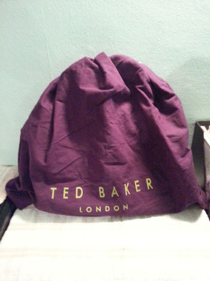
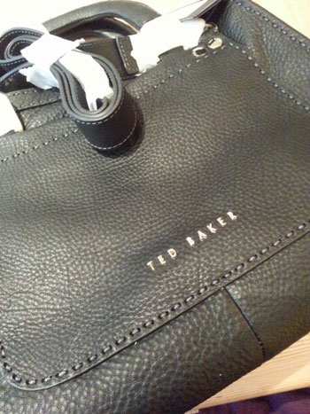
여튼 그래서 깜장이 제손에 들어왔습니다
......역시 깜장은 진리!! (←;;;;;)
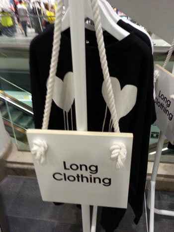
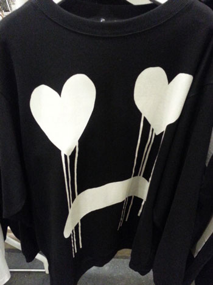
이거 맘에들어 +_+
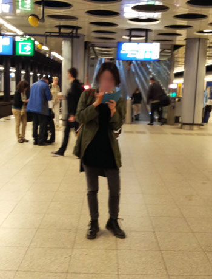
이건 암스테르담 여행갔을때
어정쩡한자세로 중앙역가는방법 검색중^^;;;;
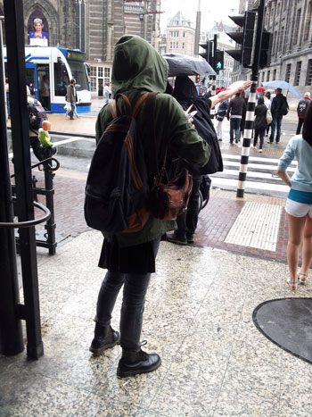
토요일날 종일 비오고 춥고해서
완전 그지꼴^^;;;;
딱 백팩하나에 엄마짐 내짐 다 넣고 여행했다
엄마님은 해외가 아니라 무슨 옆동네 놀러갔다 온거 같다고 하심 ㅋㅋㅋ
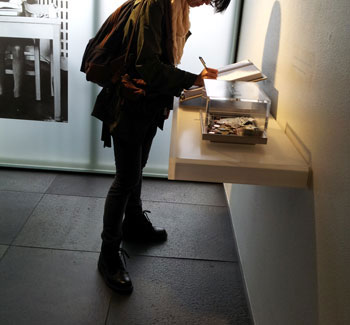
안네의집 방명록쓰는중
런던돌아가기전 저녁먹은 레스토랑
내부가 넘 이뻐서 정신없이 사진찍는중^^;;
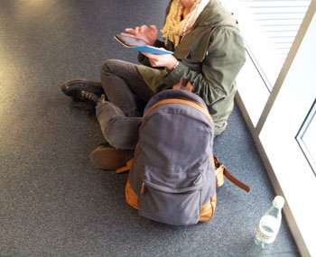
공항그지^^;;;
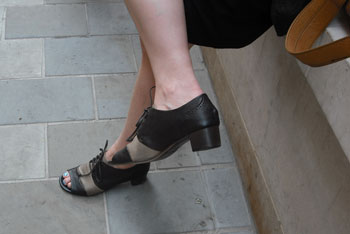
이날 Marsell 신발 처음으로 신고나갔다
확실히 발이 넘 편해 ㅜㅜ
가죽촉감도 넘 예술 흑흑 Marsell 넘 좋아 ㅜㅜ
흔들렸지만 맘에들어서 한컷
날이더워도 꿋꿋하게 가디건은 걸쳐야한다
원피스 한장만 입으면 뭔가 허전해 ㅡㅡ;;;;
콜롬비아 플라워 마켓
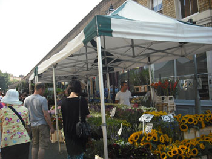
어슬렁어슬렁 구경중
브릭레인서 굉장히 어정쩡한자세가 찍혔다 ㅋㅋㅋ
Vero Moda polka dot 바지는 봐도봐도 잘산듯 뿌듯함 ㅎㅎ
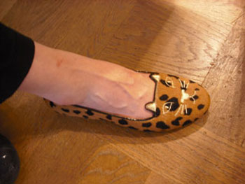
마무리는 대따 귀여운 괭이신발사진으로
하지만 가격은 귀엽지않아 ㅡㅡ;;;;;;